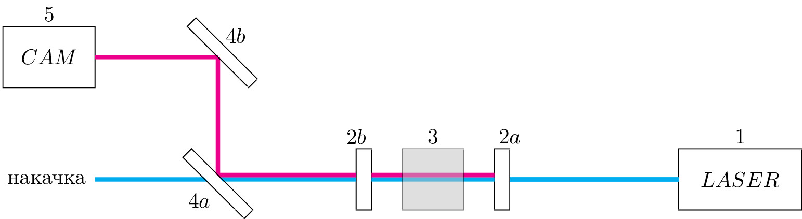

pre.tex
\documentclass[tikz]{standalone}\input{pre.tex}\begin{document}\begin{tikzpicture}
\xdef\darkness{0}
\xdef\op{0.1}
% \xdef\SIZE{10}
% \draw[step=1.0,blue,thick,opacity=\op] (-4,0) grid (\SIZE,\SIZE);
% \draw[step=0.5,blue,very thin,opacity=\op] (-4,0) grid (\SIZE,\SIZE);
% \foreach \i in {0,1,...,\SIZE} {
% \draw[opacity=\op] (-4,\i) node [left] {\i};
% % \draw[opacity=\op] (\i,0) node [below] {\i};
% }
% \foreach \i in {-4,-3,...,\SIZE} {
% % \draw[opacity=\op] (-4,\i) node [left] {\i};
% \draw[opacity=\op] (\i,0) node [below] {\i};
% }
% Camera
\draw [fill=white] (-3,2) rectangle ++(1.5,1);
\coordinate (CAM1) at (-2.25,2.5);
\draw (CAM1) node [] {$CAM$};
% Laser
\draw [fill=white] (8,0) rectangle (10,1);
\coordinate (LAS1-left) at (8,0.5);
\coordinate (LAS1) at (9,0.5);
\draw (9,0.5) node [] {$LASER$};
% resonator
\draw [fill=black!\darkness] (5,0) rectangle ++(0.25,1);
\coordinate (res-right-right) at (5.25,0.5);
\coordinate (res-right-left) at (5,0.5);
\draw [fill=black!\darkness] (3,0) rectangle ++(-0.25,1);
\coordinate (res-left-left) at (2.75,0.5);
\coordinate (res-left-right) at (3,0.5);
\coordinate (pol1) at (0.5,0.5);
\coordinate (pol2) at (0.5,2.5);
% forward wave
\draw[line width=2pt,cyan]
(LAS1-left) -- (res-right-right)
(res-right-left) -- (res-left-right)
(res-left-left) -- (pol1)
% (pol1) -- ++ (-2,0) node [left, black] {накачка}
;
\draw[line width=2pt,magenta]
($(res-right-left)+(0,2pt)$) -- ($(res-left-right)+(0,2pt)$)
;
\draw[line width=2pt,magenta]
($(res-left-left)+(0,2pt)$) -- ($(0.5,0.5)+(0,2pt)$)
;
\begin{scope}[
line width=2pt,cyan,
decoration={
markings,
mark=at position 0.5 with {\arrow{>}}},
cyan
]
\draw[postaction={decorate}] (LAS1-left) -- (res-right-right);
\draw[postaction={decorate}] (pol1) -- ++ (-2,0) node [left, black] {накачка};
\end{scope}
\begin{scope}[
line width=2pt,magenta,
decoration={
markings,
mark=at position 0.5 with {\arrow{>}}},
magenta
]
\draw[postaction={decorate}] (pol1) -- (pol2);
\draw[postaction={decorate}] (pol2) -- ++ (-2,0);
\end{scope}
% environment
\draw[fill=black!30, opacity=0.5] (3.5, 0) rectangle (4.5,1);
\coordinate (env) at (4,0.5);
% flip
\draw [fill=black!\darkness, xshift=2pt] (1,0) -- (0,1) -- ++(135+90:0.2) -- ++(135+90+90:{sqrt(2)}) -- cycle;
\draw [fill=black!\darkness, yshift=2cm] (1,0) -- (0,1) -- ++(135+90-180:0.2) -- ++(135+90+90:{sqrt(2)}) -- cycle;
%caption
\draw (pol1) node [left, yshift=-1em] {$4a$};
\draw (pol2) node [right, yshift=1em] {$4b$};
\draw (res-right-right) node [ yshift=2em] {$2a$};
\draw (res-left-left) node [ yshift=2em] {$2b$};
\draw (env) node [yshift=2em] {$3$};
\draw (LAS1) node [yshift=2em] {$1$};
\draw (CAM1) node [yshift=2em] {$5$};
\end{tikzpicture}\end{document}